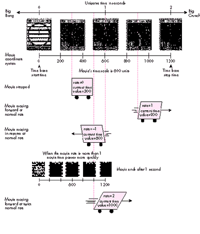
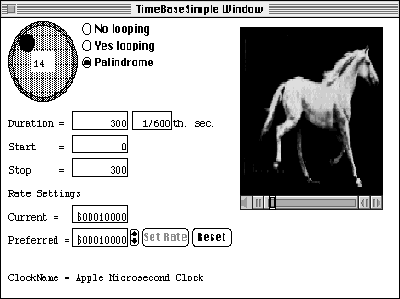
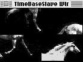
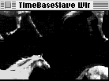
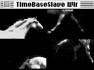

A time base is the heartbeat of a QuickTime movie. It keeps the movie going and tells
the Movie Toolbox when to stop and when to display the next frame. This article
explores the concept of time bases and shows how you can use time bases to affect the
behavior of movies as well as how to use time base callback procedures for timing
purposes.
In a basic sense, a time base can be viewed as the black box that maintains the
temporal characteristics of a QuickTime movie. When a movie is playing, some of its
temporal characteristics are obvious: it has a duration, it's "moving" or not, and so on.
Some of the not-so-obvious characteristics that a time base keeps track of are also
important, such as the clock that governs the passing of time as far as the movie is
concerned and whether the movie is looping.
Time bases are created dynamically by the Movie Toolbox each time a movie is opened,
rather than being stored with a movie. Time bases can also exist by themselves, with
no movie attached, and can therefore be used to time other dynamic events, much as
you would use a Time Manager task.
The QuickTime Movie Toolbox provides a high-level interface that lets you modify all
the parameters of a movie, some of which implicitly change its associated time base.
Most applications therefore will never need to manipulate time bases directly.
Nevertheless, there are situations in which it's necessary to access time bases more
directly, such as the following:
This article addresses these situations.
First let's define some of the terms related to the way QuickTime treats time:
You can think of a time base as a dynamic container that holds the following
information about a process, normally a movie: the time source (either the clock being
used as the master clock or the master time base); the time bounds (the start and stop
time values) and the current time value; the rate; the time base flags, indicating
different conditions for the time base; and a list of callback routines.
Figure 1 illustrates these concepts and shows how they interact. The figure assumes
that the clock or time source ticks at a constant speed; however, you could conceivably
use a clock that runs at a varied speed, which would make the movie go faster and
slower in sync with the clock.
Figure 1 doesn't show the effect of the time base flags. In QuickTime versions 1.0 and
1.5, two mutually exclusive flags are defined -- loopTimeBase and
palindromeLoopTimeBase. The loopTimeBase flag causes the time base to go back to the
start time value when it reaches the stop time value (or vice versa if the movie is
playing in reverse); palindromeLoopTimeBase reverses the direction of play when it
gets to the start or stop value of the time base.

Figure 1 Time Concepts in a QuickTime Movie
The QuickTime Movie Toolbox is the best mechanism for manipulating movies and their
parameters. The high-level calls provided by the Toolbox are all that most
applications will ever need. Using graphics as an analogy, suppose that you wanted to
draw a complicated image. The easiest way to do this would be with QuickDraw, by
calling DrawPicture, but you could also interpret the picture by hand and execute its
opcodes individually or even set the video RAM pixels directly! Similarly, when
working with a movie, you can work directly with its time base, but it's best to let the
Movie Toolbox do as much as possible -- not because it's the only way, but because it's
safer, it lessens the chances for compatibility problems, and it's simpler. Thus, for
time bases associated with movies, it's best to call SetMovieTime rather than
SetTimeBaseTime and to call SetMovieMasterClock rather than
SetTimeBaseMasterClock.
For those cases in which it makes sense to access and modify time bases directly (as in
the scenarios mentioned earlier), the Movie Toolbox provides procedural interfaces
that allow you to do so. The sample program TimeBaseSimple provided on theDeveloper
CD Series disc shows how to get a time base from a movie, how to interrogate the time
base, and how to change some of its parameters.
Figure 2 shows the window displayed by TimeBaseSimple. This window displays the
duration of the time base (in most cases the same as the duration of the movie), a
number obtained by subtracting the start time value from the stop time value. It also
shows the rate at which the movie is playing, the preferred rate (a value normally set
when the movie is created; it will differ from the rate if the movie is stopped or is
playing in reverse due to palindrome looping), the name of the clock being used, and
the type of looping in effect.

Figure 2 TimeBaseSimple Window
Through this window, the user can set the preferred rate, which is the rate the Movie
Toolbox and the standard movie controller use to set the movie in motion. Radio buttons
allow the user to specify the type of looping via the time base flags. The user can also
scan the movie backward and forward by clicking the shuttle control in the top left of
the window. This control is included in the sample to show how to go forward or
backward in the movie by changing the current time value in the movie's time base.
GETTING AND CHANGING A TIME BASE
Before you can begin working with a time base, you have to get it. TimeBaseSimple
does this with the following line:
tb := GetMovieTimeBase(gMoov); (* get movie's time base *)
GetMovieTimeBase returns the time base associated with the movie gMoov. The
variable tb receives this value.
Getting the clock information. Once you've retrieved the time base, you can get
the information about it. TimeBaseSimple acquires the information regarding the
master clock in order to display its name in the window. The clock information is
obtained via the Component Manager. First we obtain the clock component being used
by the time base; then we use it to get the information from the Component Manager.
clock := GetTimeBaseMasterClock(tb);
(* instance of clock being used *)
err := GetComponentInfo(Component(clock), cd, Handle(clockN),
NIL, NIL);
In the variable cd, a ComponentDescription record, GetComponentInfo returns the type
of component, the subtype, the manufacturer, and the component flags. Note that the
program could be written to pass NIL instead, because the information received is not
used. clockN is a handle in which GetComponentInfo returns the name of the component,
which is what we're really looking for.
Note also that when a time base has been enslaved to another (as discussed later),
GetTimeBaseMasterClock returns NIL. To ensure there's a master clock associated with
a time base,the application should first call GetTimeBaseMasterTimeBase; a NIL result
indicates that the time base has a master clock, whereas a nonzero result indicates that
a master time base exists that contains the master clock.
Getting and changing the time values. You can get the start and stop time values
for a time base as follows:
scale := GetMovieTimeScale(gMoov); (* first get the time scale *)
startTimeValue :=
GetTimeBaseStartTime(tb, scale, startTime);(* get start time *)
stopTimeValue :=
GetTimeBaseStopTime(tb, scale, stopTime); (* get stop time *)
Note that the start and stop times returned are given in terms of the time scale being
passed; this means that we can get different values for the same time point, depending
on the granularity we require. As a matter of fact, in TimeBaseSimple, when we're
preparing the shuttle control, we get the same values but with a different scale:
shuttleScale := moovScale DIV 10;
localDuration := GetTimeBaseStopTime(tBase, shuttleScale, tr);
localDuration :=
localDuration - GetTimeBaseStartTime(tBase, shuttleScale, tr);
The shuttle control in TimeBaseSimple lets you scan the movie backward and forward.
This is implemented by changing the current time value for the time base, which looks
something like this:
SetTimeBaseValue(gTBState.tBase, value*10, gTBState.moovScale);
(* 'movie scale/10' tick *)
Setting the rate. Although you can obtain the current rate for a time base and set
the rate directly, for a time base associated with a movie a better approach is to make
Movie Toolbox calls such as StartMovie or SetMovieRate. The Movie Toolbox executes
these calls by changing the time base associated with the movie. For example,
StartMovie gets the preferred rate and sets the time base rate to it, setting the movie's
time base in motion.
When the movie is being controlled by the standard movie controller, it's important to
call MCMovieChanged if you change any movie characteristic, such as the rate or the
current time value, to keep the controller in sync with the new settings. As mentioned
earlier, it's better to use high-level interfaces to enact these changes; for example, to
change the rate via the movie controller, you can call MCDoAction(mc, mcActionPlay,
newRate).
Using the time base flags. When you access a time base directly, you can set its
movie to loop, either normally or backward and forward, by setting the time base
flags. GetTimeBaseFlags retrieves the flags for inspection, and SetTimeBaseFlags
modifies the flags. In TimeBaseSimple, the SetTBLoop routine sets the looping flags:
(* Changes the state of looping in the movie if needed. *)
PROCEDURE SetTBLoop(newFlags: LONGINT);
VAR targetTB: TimeBase;
BEGIN
targetTB := gTBState.tBase; (* the movie's time base *)
SetTimeBaseFlags(targetTB, newFlags); (* change it *)
gTBState.flags := newFlags; (* remember new state *)
END;
Now that you've seen how you can access the state information of a time base, let's look
at some of the possible uses of time bases.
One interesting situation arises when you need to play back two or more instances of a
movie simultaneously. In such situations you can synchronize the movies by enslaving
all the instances to one time base. The central idea behind this is to have control of the
movie's time flow pass through a single point instead of having a number of individual
time bases running at the same time. The sample program TimeBaseSlave on
theDeveloper CD Series disc shows how to do this.
TimeBaseSlave splits the window in which the selected movie is to play into four
parts, with the quarters rotating while the movie is playing back. Figure 3 shows the
TimeBaseSlave window at its four stages of playback.



Figure 3 TimeBaseSlave Window at Its Four Stages of Playback
The basic programming strategy is as follows:
The EnslaveMovies routine in TimeBaseSlave takes care of all this:
FUNCTION EnslaveMovies: OSErr;
VAR err: OSErr;
masterTimeBase: TimeBase;
slaveZero: TimeRecord;
slaveZeroTV: TimeValue;
masterScale: TimeScale;
count: INTEGER;
BEGIN
err := noErr;
masterTimeBase := GetMovieTimeBase(gMoov[1]);
{* time base of first movie instance *}
masterScale := GetMovieTimeScale(gMoov[1]);
{* needed for SetMovieMasterTimeBase *}
slaveZeroTV :=
GetTimeBaseStartTime(masterTimeBase, masterScale, slaveZero);
{* ditto *}
FOR count := 2 TO 4 DO (* slave all movies to first time base *)
BEGIN
SetMovieMasterTimeBase(gMoov[count], masterTimeBase,
slaveZero); {* now we do it *}
(* real programmers do check for errors *)
err := GetMoviesError;
IF err <> noErr THEN
BEGIN
ErrorControl('SetMovieMasterTimeBase failed');
LEAVE;
END;
END;
EnslaveMovies := err;
END;
Once the slave instances of the movie have been set to obey the first time base, their
behavior will mimic the first movie's actions. In the TimeBaseSlave code, it appears
that only the first instance is started and that only it is rewound when the end is
reached. These actions are accomplished in TimeBaseSlave by calls to StartMovie and
GoToBeginningOfMovie, respectively, with the first movie passed as a parameter.
You could use this technique to play different movies but have all of them under a
single control. It might also be useful when no movies are involved at all but time
bases are being used for timing purposes.
TimeBaseSlave also shows how to take advantage of the callback capabilities of time
bases. Callbacks are useful when an application needs to execute given tasks when the
time base passes through certain states. You can program time base callbacks to be
triggered under the following conditions:
Passing callBackAtTime to NewCallBack shows the use of callbacks that are executed at
a specified time value. TimeBaseSlave uses the callback service to rotate the movie
pieces at regular intervals; we ask to be called every three seconds in movie time.
Note that the time value triggering the callback depends on the rate of the time base. In
other words, the time value specified will never be reached if the movie isn't playing
(if the rate is 0). If the rate is something other than 1.0 (if the movie is accelerated
or is moving in slow motion or in reverse), the specified break will come every three
seconds in movie time, not clock time.
CREATING A CALLBACK
First TimeBaseSlave has to create a callback. This could be accomplished as follows:
cb := NewCallBack(tb, callBackAtTime);
Since we want to be called at interrupt time, however, the line looks like this:
cb := NewCallBack(tb, callBackAtTime + callBackAtInterrupt);
The variable cb receives a callback, which depends on the time base tb. The callback
will be executed at specific times and can be scheduled to fire at interrupt time.
NewCallBack moves memory, which means that you can't create a callback while in an
interrupt handler. Electing to be called at interrupt time has an advantage over normal
interrupt-driven tasks, however, as I'll explain later.
PRIMING THE CALLBACK
Once we're satisfied that the callback was created (cb <> NIL), we proceed to prime the
callback. At this point we have only the hook into the time base; priming the callback
schedules it to call us. This is accomplished by CallMeWhen, as follows:
err := CallMeWhen(cb, @FlipPieces, callWhen, triggerTimeFwd,
callWhen, scale);
FlipPieces is the routine that we want to have called when the specified time value
arrives. The callWhen variable is passed both as a refCon (the third parameter) and as
the time to trigger the callback (the fifth parameter), the idea being that FlipPieces
will need to know the current time. Of course, the refCon parameter can also be used
for any other purpose you may see fit.
The time at which the callback is triggered is given a frame of reference by the scale
parameter. Remember that a time value without a time scale has no meaning at all.
Finally, triggerTimeFwd means that our routine will be called only when the movie is
moving forward. This is reasonable since TimeBaseSlave plays back the selected movie
in forward motion only.
THE FLIPPIECES ROUTINE
The routine responsible for servicing the callback follows a simple interface and is
defined in TimeBaseSlave as follows:
(* CallBackProc *)
PROCEDURE FlipPieces(cb: QTCallBack; refCon: LONGINT);
(* The refCon parameter contains the time that triggers the
callback; this is the value passed to the CallMeWhen routine. *)
VAR j: INTEGER;
callWhen: LONGINT;
scale: TimeScale;
stop: LONGINT;
tr: TimeRecord;
tb: TimeBase;
err: OSErr;
BEGIN
stage := (stage + 1) MOD 4;
FOR j := 1 TO MoviePieces DO
ShiftMoviePieces(j); (* turn the movie pieces around *)
scale := 100; (* 100 units in this scale means 1 second *)
callWhen := refCon + 3*scale; (* call me in 3 seconds *)
tb := GetCallBackTimeBase(cb); (* needed for next line *)
stop := GetTimeBaseStopTime(tb, scale, tr);
IF callWhen > stop THEN (* wrap around the three seconds *)
callWhen :=
GetTimeBaseStartTime(tb, scale, tr) + callWhen - stop;
(* now to really reprime the callback *)
err := CallMeWhen(cb, @FlipPieces, callWhen,
triggerTimeFwd + callBackAtInterrupt, callWhen, scale);
END;
TimeBaseSlave does the actual splitting of the movie into different views by creating
four instances of the same movie and setting the movie clipping region for each one to
be the rectangle in which eachis expected to display. When it's time to move the pieces,
the movie box of each instance is offset to cover the next spot. Take a look at SplitMovie
and ShiftMoviePieces to see the code.
A FEW CONSIDERATIONS
Inquisitive readers will have noted that when calling CallMeWhen, TimeBaseSlave uses
both noninterrupt and interrupt-time invocations. This was done to illustrate one of
the advantages of using Movie Toolbox callbacks: the Toolbox takes care of setting up
the A5 world when your service routine is called. Having the A5 world set up properly
is useful when your program needs to access global variables; other interrupt
handlers can't count on A5 being right when they're invoked.
Using time base interrupt callback routines does not, however, liberate the
application from the normal limitations of interrupt-servicing routines; for example,
you can't move memory.
As mentioned earlier, although time bases are created automatically when a movie is
opened or created, they can also exist on their own. If an application requires services
that allow control over the passing of time, it can create a time base and use callbacks
to trigger the service routines required. Keep in mind that even when a time base has
no movie, the application must still call MoviesTask to guarantee that callback
routines will get time to run.
OTHER TYPES OF CALLBACKS
Time base callbacks can also be triggered by a change in the rate or by a jump in the
time value. A change in the rate occurs when the movie is stopped while it's playing,
when a movie is set in motion, or when the playback speed is somehow changed. A jump
in time occurs when the current time value in the time base is set to a value outside
the normal flow -- for example, when a movie that's playing is set back to the
beginning. In addition, QuickTime 1.5 introduces callbacks "at extremes" that can be
triggered when the time base time reaches the start or stop time.
These three means of triggering a callback are of interest only if the code is tracking
the behavior of the movie, as a movie controller or a media handler would need to do;
the constants used for calling NewCallBack in these cases are callBackAtRate,
callBackAtTimeJump, and callBackAtExtremes.
If you'd like to play with the sample programs, you may want to try some variations.
For instance, it's very easy to modify TimeBaseSlave to have all the movies play at
their own beat, with separate time bases, and compare the performance with the
original TimeBaseSlave. You could also modify TimeBaseSimple to see the time values
obtained with different time scales.
Time bases are an important part of the QuickTime Movie Toolbox. Understanding their
role in the way movies play back can be extremely important for developers trying to
push the envelope in writing new and innovative QuickTime applications. This article
has opened the door; now it's up to you to decide whether this route will prove
beneficial to your efforts.
Listed below are some of the more significant features of QuickTime 1.5.
GUILLERMO A. ORTIZWhen I met Guillermo I was really young. The first thing I
said to him was, "Are you my dad?" Well, really I said something like "Waaaa!" As a
matter of fact, I was a newborn. What I like about Guillermo is that we are almost the
same. We like the same food and we watch the same TV shows, like Star Trek and Nova
. We like to play the same sports, such as tennis and basketball, and we both like to
read a lot -- lately we even read the same books. But the one way we are most alike is
that we love computers. Isn't that a weird coincidence? Another thing I like about
Guillermo is that he is really smart. He used to be a teacher, and having a teacher
around the house is always useful. He is always there to help me with stuff like math
and science. He is also a great cook. The dinners he prepares for us on the weekends are
fit for a king! He is like my family's own personal four-star chef. The music
Guillermo likes to listen to is the Beatles, the Doors, Santana, and Cream. I like those
groups too, but on our way to school we listen to rap. Guillermo is a great guy and I am
really glad to have him for a dad. -- Guillermo A. Ortiz Jr., age 13 *
RECOMMENDED READINGThis article assumes a reasonable knowledge of QuickTime
programming. For background information, see the QuickTime developer notes,
available from APDA as part of the QuickTime Developer's Kit v. 1.0 (#R0147LL/A).
For an introduction to QuickTime, see my article "QuickTime 1.0: 'You Oughta Be in
Pictures'" in develop Issue 7.*
There are no guidelines (as of this writing) regarding ways to allow users to set
the rate of a movie; the solution implemented in TimeBaseSimple has not been
approved by the User Interface gods. It's primitive, but it works.*
The TimeBaseSimple shuttle control is a cool CDEF created by C. K. Haun,
member emeritus of Developer Technical Support. Its C source is included on the
Developer CD Series disc.*
THANKS TO OUR TECHNICAL REVIEWERS Bill Guschwan, Peter Hoddie, David
Van Brink*